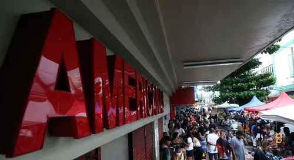

Notícias da Semana
Fique por dentro do que acontece na semana.
Blog: governo volta atrás e decide elevar os juros do consignado do INSS
Em reunião, governo decide elevar os juros do consignado do INSS, mas não define taxa
Por Ana Flor Veja maisCom inflação e juros altos, vale-refeição dura apenas 11 dias, mostra pesquisa
Levantamento da Sodexo aponta que trabalhador tem que pagar por conta própria metade das refeições que faz no mês. Antes da pandemia, duração média do benefício era de 18 dias.
Por Thaís Matos, g1 Veja maisUniversidade faz atendimento gratuito para declaração do Imposto de Renda em Salvador e Camaçari.
Iniciativa é voltada aos contribuintes que têm rendimento anual de até R$ 90 mil.
Por g1 BA Veja maisEm Vai na Fé, Eduardo tenta beijar Jenifer e faz convite: 'Vem comigo?'
Na novela das 7, missionário conta à estudante que vai embora de Piedade e a chama para ir com ele; entenda!
Por gshow — Rio de Janeiro Veja maisTravessia: delegada Helô começa a investigar caso de pedofilia
Além disso, atores e autora falam da repercussão da trama sobre o crime na internet
Por gshow — Rio de Janeiro Veja maisInvasão de palco, pulseiras luminosas, looks marcantes: Tudo o que rolou na gravação do DVD de Luan Santana
Sertanejo intercalou sucessos com 25 músicas inéditas no 'Luan City 2.0'
Por Bia Rohen (@biarohen) Veja maisAmericanas detalha plano de recuperação, com aporte de R$ 10 bi, venda de avião e proteção contra litígio
O volume de aporte virá em R$ 10 bilhões, como já esperado, mas há mudança em outros números
Por Maria Luíza Filgueiras — São Paulo Veja maisO choque de juros chegou à economia
Apesar disso, o cenário-base do mercado financeiro mundial não é de crise na Europa e nos EUA.
Por Banco Master Veja maisEficiência em cibersegurança exige ambiente convergente
Recursos escassos e falta de recursos humanos capacitados desafiam empresas na adoção de novas tecnologias
Por KPMG Veja mais"CS2" será lançado nesta semana? Entenda teoria da comunidade
Suposição se pauta, principalmente, do jogo com a série The Office
Por Filipe Guedes, para o ge Veja mais